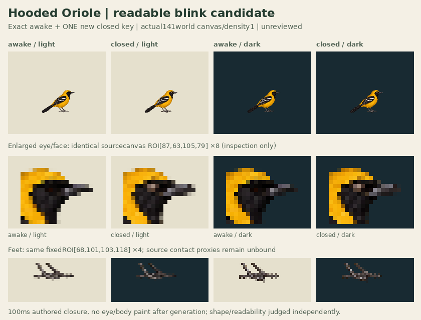

One new closed drawing + exact old awake. Actual141×141world canvas/density1. HELD pending independent eye/readability/body/feet review; no useful slot presumed.
30Hz60/3/27ticks:100ms closed,3s episode, final89 held until3000ms, one-shot; explicit replay. No body bob, position fitting or generated intermediates. Inspect lid shape and minor body/foot redraw candidly.

Prior192/world140.8profile and awake/look/blink sources untouched. New141canvas is+.2world; nominalpivot83.6,110 rounds84,110 (+.4x), no sourcepixel offset. Contacts[]; geometryReviewedfalse; supportWorldnull. StraightRGBA source, not codec/Sharp/Zod/app admission.
Primary provenance · Wholecanvas index maps · Exact source APNG